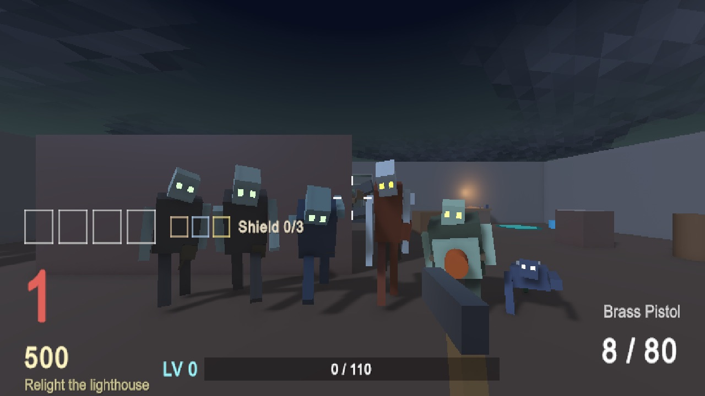

01:3323 Nov 2026b48faed
Polish · enemies
Four kinds of Drowned
Until now every Drowned was the same body. Now there are four, each with its own silhouette and eye colour, so you can read a crowd at a glance. The user approved all four from the design.
| Variant | Looks like | Eyes | Health | From |
|---|---|---|---|---|
| Dockhand | The basic one: hunched, one shoulder low, a limping shamble | green | 1.0× | round 1 |
| Netter | Tall and thin, long arms trailing a net. Fast, and weaves as it runs | amber | 0.6× | round 3 |
| Floater | A wide, bloated tank with a cork-buoy bladder strapped to its belly. Hits for 54 | sickly yellow | 1.8× | round 4 |
| Tidecrawler | Legless, dragging itself on long arms. Lunges from 3 m | cold white | 0.7× | round 5 |
- The Floater's bladder takes 3× damage. Shoot it and it pops, staggers the Drowned around it and pays 100.
- The mix grows with the rounds. Each variant is guaranteed to show up in its first round, each has a cap on how many can be alive at once, and at least 40% of every round is still Dockhands.
- They move like bodies now. Procedural shamble, run and sprint cycles, reaching arms, a lurch when they start running, climbing through windows, and falls in the direction they were hit. Each one gets a slightly different size, shade and posture.
- Readable attacks. Eyes flare white-hot just before a swing, and crowds spread into an arc around you instead of queuing in a line.
- Two bugs caught on the way: pooled Drowned could come back unshootable, or still glowing from the burn element.

How it was built
Design first (7bf783d), with each variant's health, speed, damage and shots-to-kill worked out per round. Movement comes from a procedural DrownedAnimator with level-of-detail, so 24 animated Drowned stay inside the 60 fps budget. The Drowned code grew from 881 to 2,544 lines, the biggest jump of any system.
+22new EditMode tests
437tests passing
4variants